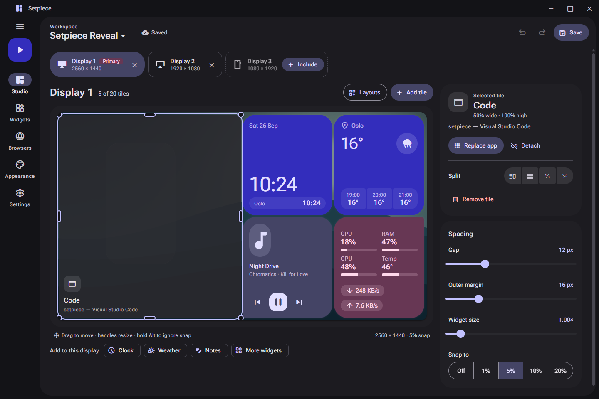
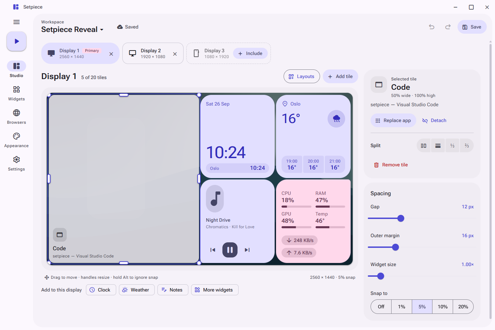
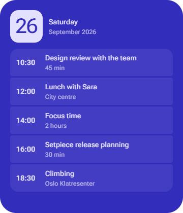
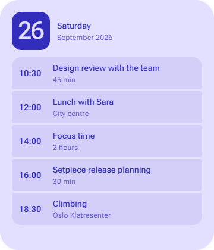
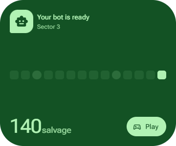
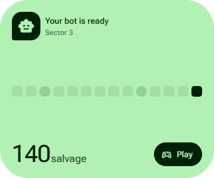

Every display, its own layout
Include the displays a workspace uses, portrait ones too, and give each its own board at its real aspect ratio.
Setpiece tiles your apps, live widgets and persistent browsers across every display. Save the layout once, then launch it whenever you sit down.
Source available · Free for noncommercial use






Studio for layouts, Widgets for everything live, Browsers for sessions that stay, Appearance for the look, and Settings for the rest.
Put a named browser in any tile. Go fullscreen on a video and it fills the tile, not the monitor, so your widgets, chat and editor stay right where they are.
Press play to go fullscreen. The video stays inside its tile.
Pick an accent, or any color you like. Setpiece builds a full Material 3 palette from it, in light and dark, and every page, control and widget follows along.
Also on the Appearance page: surface opacity, wallpaper dimming, accent glow, corner roundness, and eleven wallpapers, some of them moving.
Include the displays a workspace uses, portrait ones too, and give each its own board at its real aspect ratio.
Move tiles freely or with smart snap. Drop one tile on another to swap them. Undo is always one Ctrl+Z away.
Columns, rows, grid or main-and-side. Preview first, pick the tile count, then apply. Tile contents keep their order.
Deep focus, streaming, a Friday of meetings. Switch in one click; unsaved changes are never lost silently.
Stop the workspace, or just close Setpiece, and your windows and taskbars return to where they were.
Workspaces live on your PC. Connection secrets are encrypted for your Windows account and never leave it.
The repository provides the source. A prebuilt download isn't published yet.
cd UI
pnpm install --frozen-lockfile
cd ..
.\build.ps1Then run Setpiece.exe from Setpiece/bin/Release/net10.0-windows/.
Screenshots come from the development preview, which runs the real interface with sample data. Optional integrations may need their own accounts or hardware.